NUEVO Sistema en la nube para obras de construcción
La seguridad de tu obra, bajo control.
proHS reúne en un solo lugar el personal, los EPP, los permisos de trabajo, los siniestros, los equipos y todos los vencimientos. En la oficina o en la obra, desde la computadora o el celular, con los informes PDF listos para presentar.
Casi todos los módulos tienen fechas: habilitaciones, exámenes, extintores, seguros y capacitaciones. proHS las junta en un calendario y te avisa antes de que algo se venza.
0módulos de gestión
0informes PDF listos
0pestañas de gestión ambiental
0términos en el glosario SRT
Nómina de personal
Cargás un dato una vez y se ve en toda la aplicación.
La nómina de personal es el eje de proHS. Cada trabajador tiene una ficha que se completa sola con lo que se registra en los demás módulos: sus obras, su ART, su aptitud médica, sus capacitaciones, los EPP que recibió y los protocolos que se le comunicaron. Mirá cómo lo que se carga en un módulo aparece en la ficha, sin volver a escribir nada.
Obras ART Vigilancia de salud Capacitaciones EPP Protocolos
proHS · Gestión de EPP
Gestión de EPP
Registrar Entrega de EPP
Empleado (elegí de la nómina) *
Artículo EPP *
Talla
Cantidad *
Vida útil (meses)
Firma del empleado que recibe
Entrega registrada
proHS · Capacitaciones
Capacitaciones
Nueva Capacitación
Título de la capacitación *
Duración (hs) *
Instructor *
Asistentes (de la nómina de personal)
Protocolos que se explican
Capacitación guardada
proHS · Vigilancia de Salud
Vigilancia de Salud
Nuevo Examen Médico
Elegir de la nómina de personal...
Tipo de examen *
Resultado
Fecha del examen
Próximo control
Los datos de salud quedan protegidos: solo los ven los perfiles autorizados.
Examen registrado
proHS · Protocolos y procedimientos
Protocolos y procedimientos
Nuevo documento
Código *
Revisión
Título *
Estado
El archivo del procedimiento se adjunta al documento.
Documento guardado
Se refleja en la ficha
proHS · Nómina de Personal · Ficha
M
Mamani, CarlosOficial albañil · Estructura · Personal propio · Leg. LEG-0231
ART vigenteAptoActivo
EPP entregados (23)
Pantalla facial17/11/2026Nuevo
Arnés de seguridad12/3/2026
Casco de seguridad12/3/2026
Capacitaciones (2)
Primeros auxilios y RCP básico18/6/2026
Uso y Mantenimiento de EPP5/4/2026
proHS · Nómina de Personal · Ficha
M
Mamani, CarlosOficial albañil · Estructura · Personal propio · Leg. LEG-0231
ART vigenteAptoActivo
Capacitaciones (23)
Trabajo seguro en altura17/11/2026Nuevo
Primeros auxilios y RCP básico18/6/2026
Uso y Mantenimiento de EPP5/4/2026
Protocolos y procedimientos vigentes
INS-004 Rev. 00 — Hormigonado con bomba y vibradoAl día · Rev. 00
PRC-001 Rev. 02 — Trabajo en alturaSin capacitar ni notificarAl día · Rev. 02 · 17/11/2026
proHS · Nómina de Personal · Ficha
M
Mamani, CarlosOficial albañil · Estructura · Personal propio · Leg. LEG-0231
ART vigenteSin examen médicoAptoActivo
Aptitud médica
No hay examen cargado en el módulo Médico para este trabajador.
Último examen
17/11/2026 (Periódico)
Resultado
Apto
Próximo control
17/11/2027
ART
Aseguradora
Cuyo ART
Vigencia
1/1/2026 al 31/3/2027
proHS · Nómina de Personal · Ficha
M
Mamani, CarlosOficial albañil · Estructura · Personal propio · Leg. LEG-0231
ART vigenteAptoActivo
Protocolos y procedimientos vigentes
INS-004 Rev. 00 — Hormigonado con bomba y vibradoAl día · Rev. 00
PRC-001 Rev. 02 — Trabajo en alturaAl día · Rev. 02
PRC-005 Rev. 00 — Trabajo en espacios confinadosSin capacitar ni notificar
Capacitaciones (2)
Primeros auxilios y RCP básico18/6/2026
Uso y Mantenimiento de EPP5/4/2026
Gestión documental
Todos los documentos al alcance, sin carpetas compartidas.
Programas de seguridad, constancias de ART, habilitaciones, seguros, certificados, planos y actas: todo vive dentro de proHS, cargado una sola vez con su vencimiento y su archivo adjunto. Se consulta desde la computadora o desde el celular, según el perfil de cada usuario, sin pedir acceso a una unidad compartida, sin buscar entre carpetas de red y sin mandar adjuntos por mail.
Archivos adjuntos Vencimientos Guía por provincia y rubro Comentarios Legajo de obra
proHS · Gestión Documental
Agregar Documento
Tipo de documento *
Estado *
Fecha de vencimiento
Responsable
N.º de expediente
Archivo adjunto (PDF, foto o Word)
Documento guardado
proHS · Gestión Documental
Agregar Documento
Tipo de documento *
Estado *
Fecha de vencimiento
Responsable
N.º de expediente
Archivo adjunto (PDF, foto o Word)
Constancia guardada
proHS · Gestión Documental
Agregar Documento
Tipo de documento *
Estado *
Fecha de vencimiento
Responsable
N.º de expediente
Archivo adjunto (PDF, foto o Word)
Documento renovado
Se actualiza el estado
proHS · Gestión Documental
Gestión Documental
1920Al día
1Por vencer
65Vencidos o faltantes
2En trámite
Programa de Seguridad (Res. 51/97)
Estado
Vencido (vencido hace 20 días)
Vencimiento
28/10/2026
Responsable
Gabriela Ríos
Programa de Seguridad (Res. 51/97)Nuevo
Estado
Vigente (vence en 365 días)
Vencimiento
28/10/2027
Responsable
Gabriela Ríos
Adjunto
programa-seguridad-2026.pdf
Coordinación de H&S entre Contratistas (Res. SRT 319/99)
Estado
Por vencer (vence en 22 días)
Vencimiento
09/12/2026
proHS · Guía de requisitos y habilitaciones
Guía de requisitos
San Juan · Construcción / obra
53% cubierto56% cubierto
1819 Cumple1413 Falta2 Vencido1 En trámite
FaltaAfiliación a una ART y constancia de cobertura vigente
No hay documento ni registro cargado en proHS.
CumpleAfiliación a una ART y constancia de cobertura vigenteNuevo
Constancia de Afiliación a ART · vence 31/03/2027
FaltaCertificado de luces de emergencia
No hay documento ni registro cargado en proHS.
proHS · Gestión Documental
Gestión Documental
1920Al día
10Por vencer
6Vencidos o faltantes
2En trámite
Coordinación de H&S entre Contratistas (Res. SRT 319/99)
Estado
Por vencer (vence en 22 días)
Vencimiento
09/12/2026
Responsable
Maximiliano Pechieu
Coordinación de H&S entre Contratistas (Res. SRT 319/99)Nuevo
Estado
Vigente (vence en 365 días)
Vencimiento
17/11/2027
Responsable
Maximiliano Pechieu
Adjunto
acta-coordinacion-contratistas.pdf
Certificado de Luces de Emergencia
Estado
Faltante
Responsable
—
Sin recursos compartidos
No hacen falta carpetas de red, unidades compartidas ni pendrives. Cada documento está dentro de proHS y lo ve quien tiene permiso.
Vencimientos que avisan
Los recuadros muestran qué está al día, por vencer, vencido o en trámite, y «Pendientes» avisa cuando algo está por vencer.
Qué exige cada provincia
Elegís provincia y rubro, y la guía cruza lo exigible con lo que ya cargaste: qué cumple y qué falta.
Legajo de obra en un clic
Se genera un PDF con el estado de toda la documentación, listo para una inspección o para el comitente.
proHS · Gestión Documental
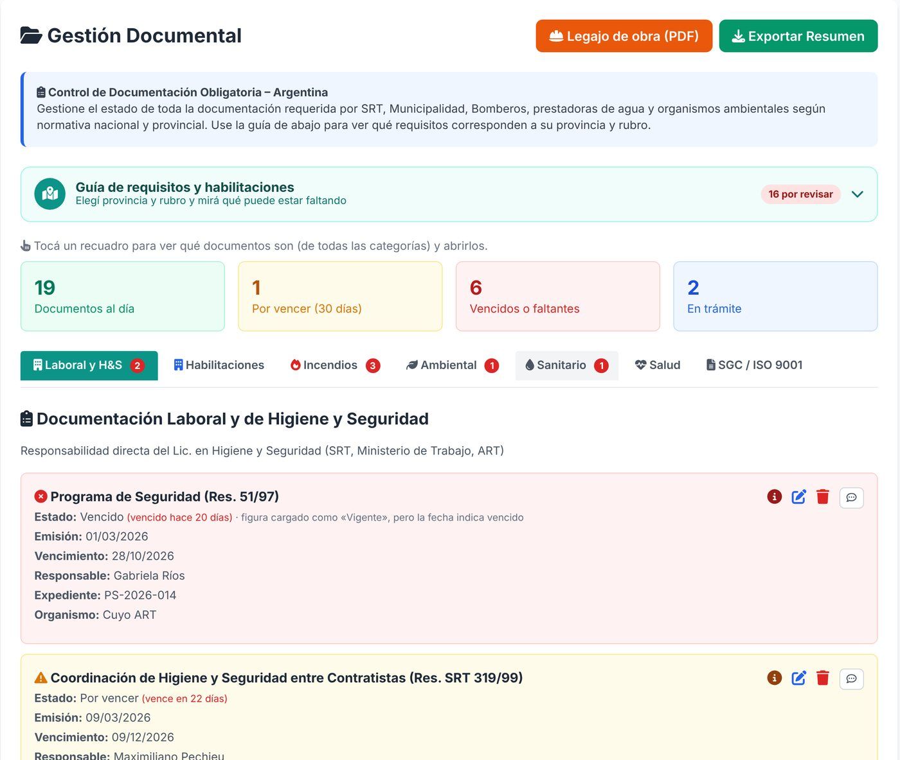
Todo en una pantalla. Al día, por vencer, vencidos y en trámite, con pestañas por categoría: laboral, habilitaciones, incendios, ambiental, sanitario, salud y calidad.
proHS · Guía de requisitos
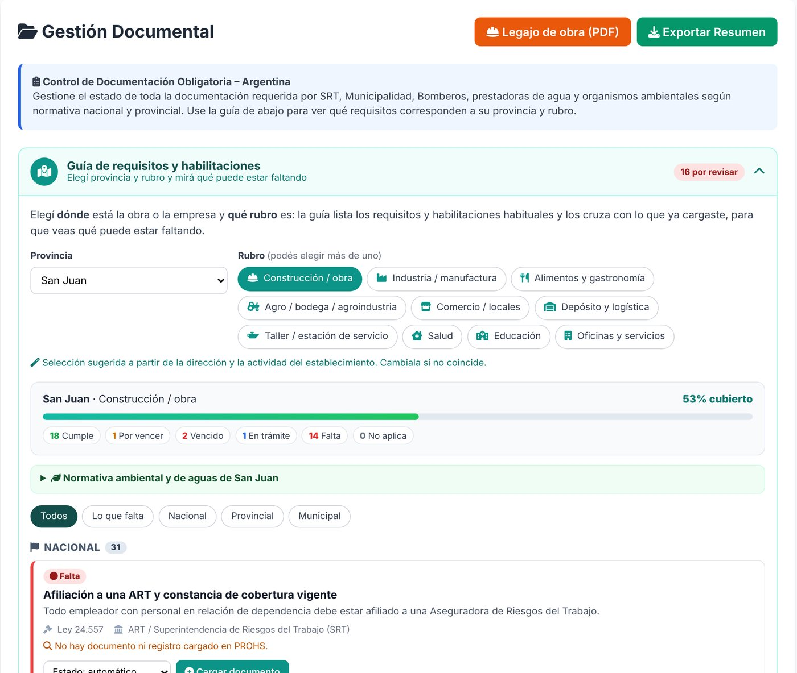
La guía te dice qué falta. Elegís la provincia y el rubro; proHS lista los requisitos nacionales, provinciales y municipales y los cruza con lo cargado.
Planos de emergencia
Dibujá el plano y simulá la evacuación antes del simulacro.
proHS trae su propio editor de planos: dibujás los muros y las puertas, colocás los símbolos de seguridad, ubicás a las personas y el sistema calcula cuánto tardan en salir, traza las rutas sugeridas y revisa el plano contra la normativa. El mismo editor sirve para el layout de gestión de residuos.
Editor de planos Simulador de evacuación Vista 3D Varias plantas Layout de residuos
proHS · Planos de evacuación · Simulación
Del dibujo al resultado, sin salir de proHS
Dibujás y ponés escala real. Muros, puertas, salidas, extintores, botiquín, luces de emergencia y más, con símbolos según IRAM 10005 e ISO 7010. Medís en el plano para calibrar los metros.
Ubicás a las personas por grupos, juntas o muy dispersas, con comportamiento ideal o natural y una variación al azar para repetir el ensayo.
Calcula y anima. Tiempo total de evacuación, recorrido más largo, espera en cada salida y una animación con las personas saliendo. Un botón traza las rutas sugeridas.
Verifica el plano contra el Decreto 351/79: ancho de salidas, distancia a la salida y al extintor, y te avisa qué falta cargar.
Vista 3D, varias plantas y PDF. Evacuación de edificios con más de un piso y un PDF listo para imprimir.
Editor de planos
El editor. Barra de herramientas, imán a muros, modo ortogonal y rutas de escape.
Simulación de evacuación
Los números. Tiempo por salida, espera máxima y quién sale último.
Vista 3D
Vista 3D. Para mostrar el plano a quien no lee planos.
Layout de residuos
El mismo editor, para ordenar la gestión de residuos.
Dibujás el predio con sus zonas (producción, patio de insumos, acopio transitorio, separación, patio de residuos y acopio de residuos peligrosos), ubicás los contenedores por tipo y trazás los circuitos de insumos, residuos y residuos peligrosos. proHS revisa el layout: separaciones mínimas, circuitos que no se crucen, contención de derrames, kit antiderrames y la dirección del viento frente a las fuentes de polvo.
Layout de gestión de residuos
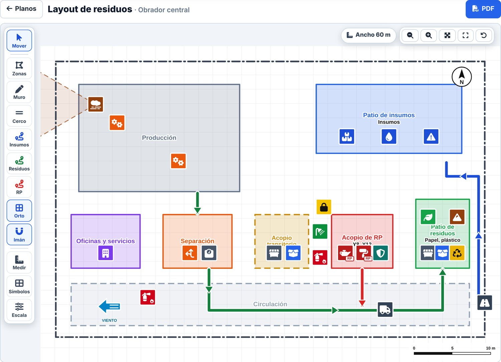
El layout. Zonas con su rótulo, símbolos de residuos por tipo y flujos por color.
Revisión del layout
La revisión. Observaciones y puntos cumplidos, con la referencia normativa de cada uno.
Lo que hace especial a proHS
Un solo sistema, en la obra y en la oficina.
proHS funciona igual en la computadora de la oficina y en el celular de la obra, con los mismos datos y las mismas funciones. En la obra se puede ir adelantando trabajo, y después se completa o se cierra en la oficina, sin cargar nada dos veces.
Un calendario único de vencimientos
Habilitaciones, exámenes médicos, recargas de extintores, seguros y capacitaciones en una sola vista. Pasá el cursor por un día y mirá el detalle.
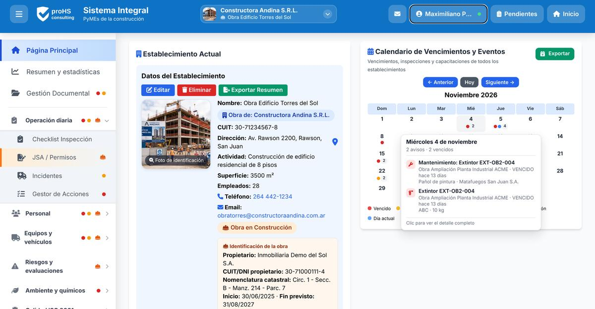
Informes PDF en un clic
Con membrete propio, listos para presentar o archivar.
Empresas y obras
La constructora es dueña del personal y los equipos; cada obra guarda sus propios datos sin mezclarse con las demás.
Personal compartidoEquipos por obraHistorial
Normativa argentina integrada
Matriz de riesgos, RGRL, carga de fuego, NIOSH y glosario con la normativa de cada término.
Ley 19.587Dec. 351/79Dec. 911/96Res. SRT
Perfiles y permisos
Cada persona ve solo los módulos que su perfil habilita. Cinco perfiles de fábrica y los propios que necesites.
UsuariosAuditoríaCopias
Chat en vivo y mensajes del equipo
Chat general y privado con fotos, lista de quién está conectado y un buzón con respuestas y adjuntos. Todo dentro del sistema.
La misma aplicación se adapta a la pantalla del teléfono, con los mismos datos que en la computadora: checklist de inspección, incidentes y EPP, con huella digital para entrar.
HuellaEscaneo de QRFotos
Planos y simulador de evacuación
Dibujás el plano, ubicás a las personas y el sistema calcula cuánto tardan en salir, traza las rutas y lo verifica contra la normativa.
Editor de planosSimulaciónVista 3D
Explorador de módulos
Cada módulo, a pantalla completa.
Elegí una categoría y tocá cualquier tarjeta: las capturas se abren en tamaño grande, con zoom, para que puedas leer cada dato. Son pantallas reales de la aplicación con datos de ejemplo.
Gestión ambiental: trece pestañas
El módulo más completo del sistema organiza la habilitación ambiental, la trazabilidad de residuos, el plan de gestión y el cierre de la obra.
Informes
Del dato al documento, sin planillas.
Cada módulo genera su propio informe PDF con membrete, resumen y detalle. Estas son las primeras páginas de informes reales generados con datos de ejemplo.
Comunicación del equipo
Toda la obra hablando en el mismo lugar.
Chat en vivo, buzón de mensajes y comentarios en cada registro. Cada aviso queda dentro del sistema, junto al incidente, la acción o el informe del que se habla, sin depender de grupos de WhatsApp.
Chat en vivo Buzón Comentarios Avisos Registro de cambios
LGDFCR
Chat general 3 conectados
Laura GiménezArrancamos el hormigonado a las 8:30. Necesito el andamio revisado antes.
Diego FerreyraYa revisé andamios y arneses. Subo el checklist de EPP.
Carlos Ruiz corte-puesto-2.jpgFalta la pantalla facial en el puesto 2.
Perfecto. Charla sobre trabajo en altura a las 14.
Diego está escribiendo…
Escribí un mensaje…
3 mensajes sin leer
Comentario en Incidentes
Chat en vivo con todo tu equipo
Un chat general para toda la cuenta y conversaciones privadas, con la lista de quién está conectado en ese momento. Funciona en la computadora y en el celular.
Quién está conectado: en línea, ausente (con "visto hace…") o desconectado.
"Escribiendo…" en vivo y contador de mensajes sin leer por conversación.
Fotos y archivos en el mensaje, con vista previa en el chat (hasta 4 por mensaje).
Varias ventanas abiertas a la vez, como en un mensajero.
Editar o eliminar mensajes propios; la administración puede moderar y queda constancia.
Chat general y conversación privadaQuién está conectado
Un buzón interno para lo importante
Para lo que necesita asunto, adjuntos y respuesta ordenada: informes de inspección, vencimientos, convocatorias. Todo queda en hilos, dentro del sistema.
Recibidos, Enviados y Papelera, con filtros (no leídos, comentarios, mensajes) y buscador.
Redactá a una o varias personas, o a todas las de un perfil con un clic.
Hasta 8 adjuntos por mensaje: informes en PDF, fotos, planillas.
Responder y responder a todos: la conversación queda en un solo hilo.
Confirmación de lectura y contador de no leídos en la cabecera.
Hilo con respuestaInforme PDF adjunto
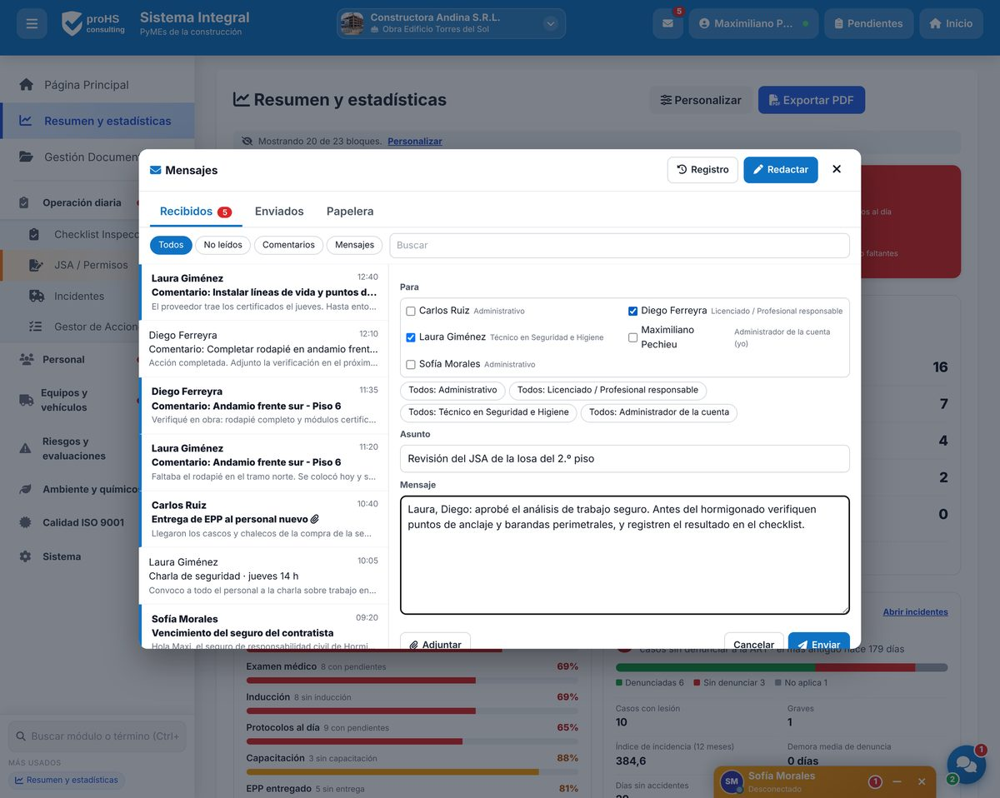
Redactar
Comentarios en cada registro
Cada incidente, acción y otros registros tiene su botón de comentarios con contador. La charla queda pegada al registro: quien lo abre dentro de un año ve qué se habló y quién lo verificó.
Un hilo por registro, con respuestas y el contador visible en la tarjeta.
"Avisar a…": el comentario le llega al buzón de quien elijas, con acceso directo al registro.
Respeta los permisos: solo comentan y avisan personas con acceso a ese módulo.
Con adjuntos cuando hace falta una foto o un documento.
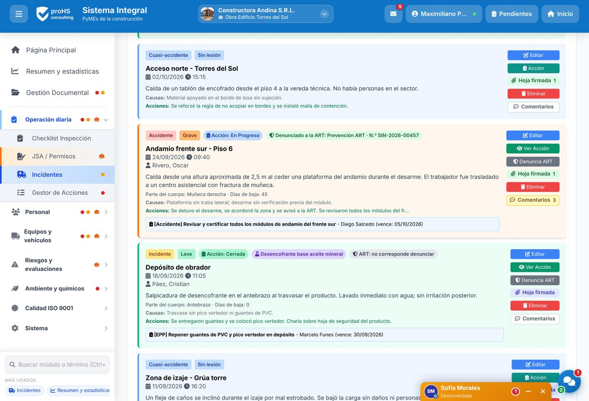
Botón de comentarios en cada incidente
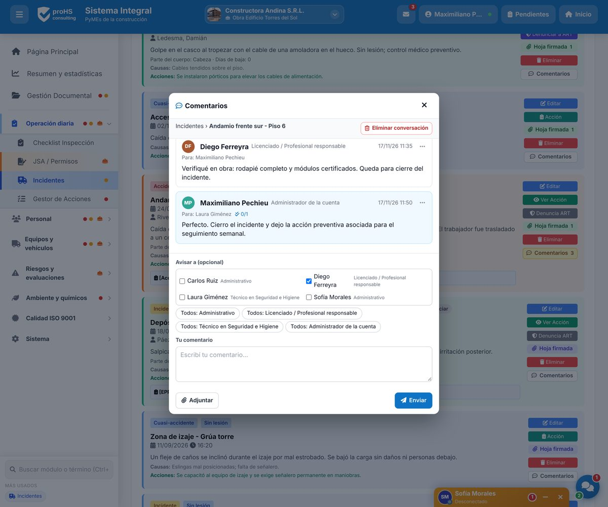
Conversación sobre un registro
Avisos a tiempo y control para la administración
Nadie se entera tarde de un mensaje, y la administración puede ver qué se modificó. Cada perfil decide si usa los mensajes, y un perfil de solo consulta también puede chatear y comentar.
Avisos del sistema de Windows o Android cuando llega un mensaje, aunque estés en otra ventana.
También con el navegador cerrado cuando el sistema está publicado con https.
Vos decidís si el aviso muestra el texto del mensaje.
Registro de cambios: quién editó o eliminó mensajes de otras personas y cuándo.
Habilitado por perfil desde la administración de usuarios.
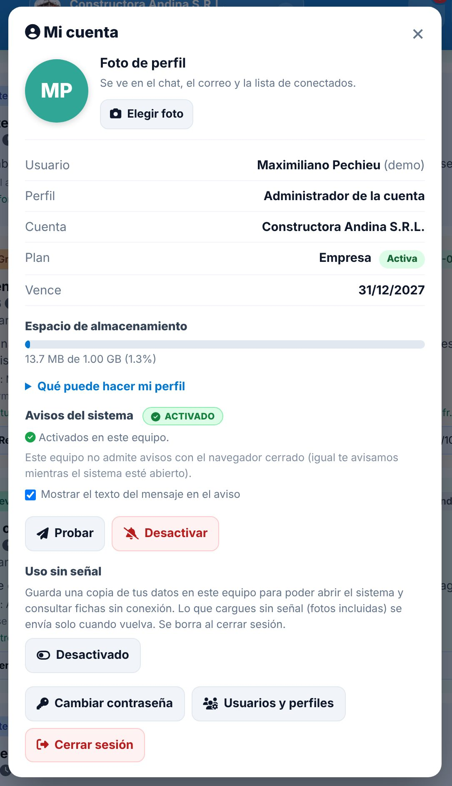
Avisos del sistema
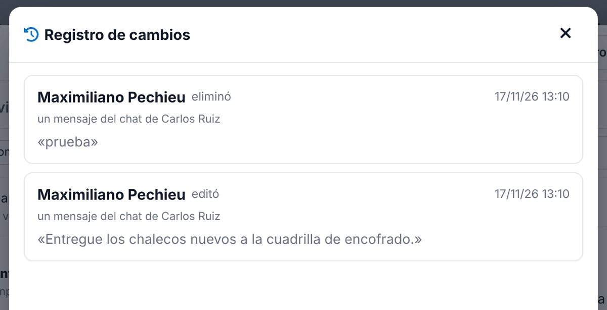
Registro de cambios
Y en el celular
La misma conversación, en el bolsillo
Quién está conectado
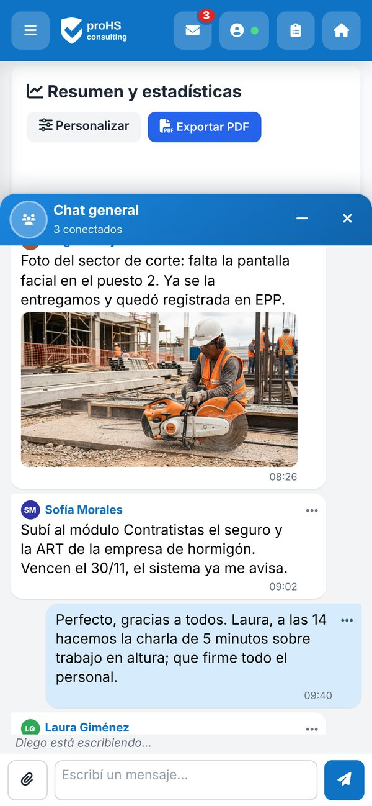
Chat con fotos
Buzón de mensajes
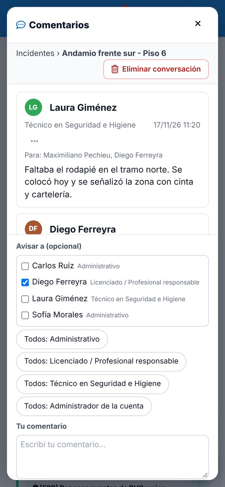
Comentarios
En la obra y en la oficina
El mismo sistema, donde estés.
Todo lo que se hace en la oficina también puede hacerse desde el celular, con los mismos datos. En la obra permite adelantar trabajo, como una inspección, un incidente o la entrega de EPP, que luego se completa o se cierra en la oficina.
Checklist de inspecciónCompletá el relevamiento recorriendo la obra.
Entrada con huellaSin guardar la contraseña en el aparato.
Códigos QREscaneá un equipo y consultá su ficha.
Panel de administración
Listo para varias empresas y usuarios.
Una consola aparte para crear cuentas, definir planes, asignar perfiles y mantener un registro de quién hizo qué.
Cuentas y planesAlta de empresas con su plan, vigencia y límites.
Perfiles y permisosQué módulos ve y edita cada persona.
Auditoría y copiasRegistro de actividad y copias de seguridad del servidor.
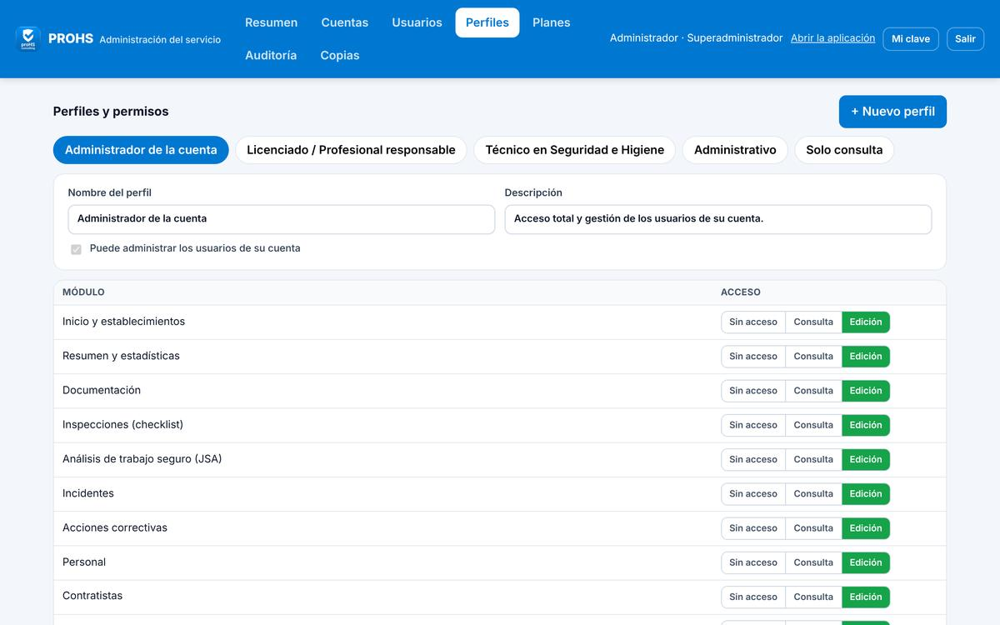
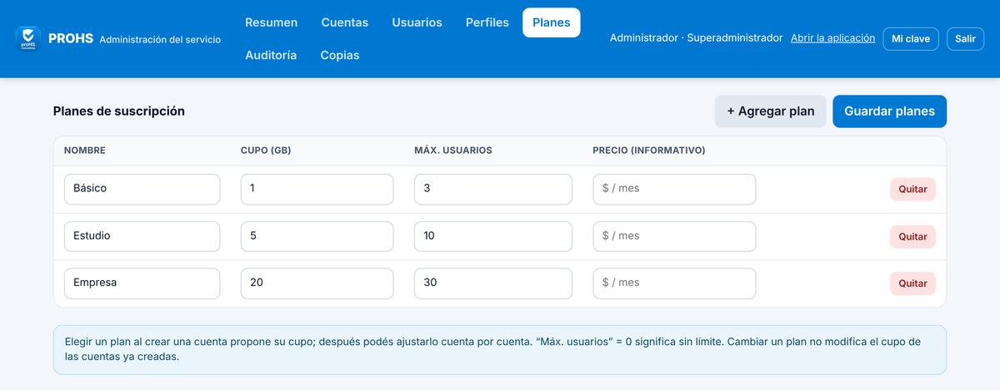
Maximiliano PechieuAutor y desarrollador de proHS
Sobre el autor
Maximiliano Pechieu
Tecnología e informática · Gestión administrativa y documental
Entusiasta de la tecnología y la informática, con estudios avanzados en Arquitectura y formación en Seguridad y Salud Ocupacional. Se desempeña como Jefe de División en un organismo del Estado, donde ejerce a diario la gestión administrativa y documental: circuitos de expedientes, registros y control de la información.
proHS integra esa experiencia en una herramienta pensada para las pequeñas y medianas empresas de la construcción: ordena su documentación de seguridad e higiene, conserva el historial de cada registro y toma como base la normativa argentina vigente.
FormaciónArquitectura · estudios avanzados
FormaciónLicenciatura en Seguridad y Salud Ocupacional · UCCuyo (cursada completa)
Ámbito laboralJefatura de División · gestión documental